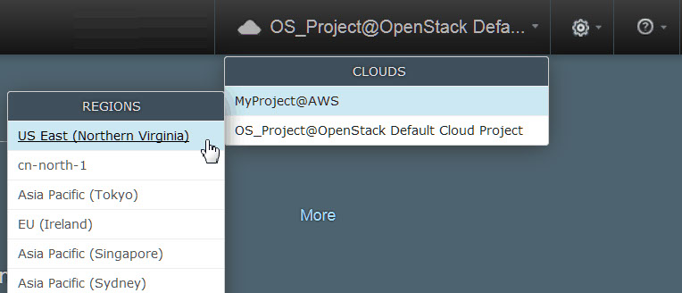
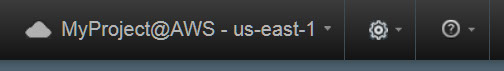

If you connect to the target cloud through OpenStack Heat, you can provision an
environment directly from the blueprint designer.
Before you begin
This method works only for blueprints that were created with the blueprint designer, not
with blueprints that you create on the IBM DevOps Deploy (Deploy) server.
- Connect to a cloud system.
- Create a blueprint and configuration file, and ensure that
these files are appropriate for the target cloud system. Depending on your cloud
system, see
- Confirm that you have access to the
ucd-agent-linux-ppc64, ucd-agent-linux-x86_64,
ucd-agent-win-x86_64, ucd-agent-linux-s390x,
ucd-agent-aix-powerpc64, and ucd-agent-linux-ppc64le
agent components. See Mapping teams to objects.
By default, when you provision an environment from a blueprint, the
environment is created by using the cloud account information of its cloud project. However, when
you create a blueprint for most kinds of clouds, you can specify different user
credentials. See
Providing cloud credentials in a blueprint.
Procedure
-
Make sure that you are connected to the cloud project and region with which you want to
provision the environment.
Select the cloud project and region from the menu in the upper-right corner of the screen in
the blueprint design server, as shown in the following figures. The region is either a geographical
cloud location or a physical data center.

The cloud project and region are shown at the top of the screen, as shown in the
following figure:

-
Open the blueprint, and then click Provision.
The Provision Blueprint to new Environment window
opens.
-
In the Cloud Project field, select the cloud project.
-
In the Cloud Region field, select the cloud region.
-
In the Orchestration Provider field, select the orchestration
provider.
-
In the Environment Name field, specify the name of the
environment.
-
In most cases, select a configuration file from the Configuration
list.
Configuration files are not necessary if you are deploying to OpenStack and OpenStack-based clouds.
If you are deploying to any other supported cloud, you must use a configuration file. You can also create a
configuration file by opening the
Configuration list and clicking
Create Configuration.
Note: If you do not select a configuration file, the
blueprint is provisioned on the OpenStack server that is associated with your user
account.
Click Set The Parameter Values For This Environment to show the
parameters in the blueprint and the values in the configuration file. The window includes sections
for parameter groups that are in the blueprint. To view parameter values, click the appropriate
section name to open the section. The window also validates the blueprint and the configuration
file. If the configuration file includes parameters that are not in the blueprint, then only the
parameters that are in the blueprint are used.
-
Customize the parameter values in the window.
The Provision Blueprint to new Environment window includes sections for
parameter groups that are in the blueprint, such as Image Parameters,
Network Parameters, and Agent Parameters. To view and
change parameter values, click the appropriate section name to open the section.
For example, for some clouds, click
Image Parameters and then
specify the zone for the environment in the
Availability Zone field. To
supply a value for a secure component resource property or secure component environment property,
locate the property in the
Agent Parameters section and specify the value in
the
Property name Secure Property field.
For some clouds, click Image Parameters and then specify the flavor for the
environment images in the Flavor field. If the list of flavors does not
contain the flavors that you expect, make sure that you registered the flavors with the cloud
discovery service. See Configuring SoftLayer image flavors or Configuring VMware vCenter image flavors.
In most cases, you select an SSH key
by name in the Key Name field under Image Parameters.
However, for VMware clouds, paste the contents of the SSH public key in this
field.
See the following information for Microsoft Azure:
- In the Admin User and Admin Pass fields, specify
the name and password of the administrative user on the new virtual machines. The administrative
user cannot be named
root on a Linux™
system. Azure requires a complex password for the
administrator account.
- In the Availability Zone field, accept the default value. Selecting a
different availability zone is not supported.
- In the Resource Group field, select the resource group for the new
environment.
- In the Storage Account field, select the storage account for the new
environment.
- Optional:
If you change the parameters, you can save the changes to the configuration file by selecting
the Save changes to configuration file check box.
This check box is displayed only if you change parameters and are using a configuration
file.
-
Provision the environment.
- To validate all parameter values before you provision the environment, click
Provision.
- To provision the environment without validating parameters, click Quick
Provision
.
Results
The new environment is displayed on the Environments page of the
blueprint designer and in the list of application environments on the Deploy server.You can see the status of a specific environment by selecting it from the
Show all environments list at the top of the page. When you provision a
standalone Heat engine, the environment name is a combination of the orchestration provider name and
the word "HEAT," such as Amazon (HEAT). When you provision an OpenStack engine, the
environment name is a combination of the OpenStack cloud project name, the region, and the word
"OPENSTACK," such as OpenStack - RegionOne (OPENSTACK).
What to do next
To modify the images or the Deploy components in a provisioned environment, update the blueprint and then click
Apply.